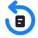
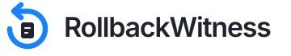
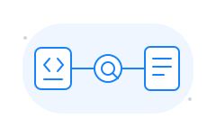
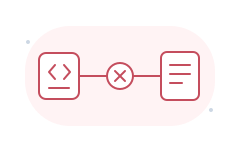
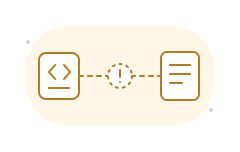
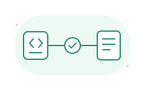
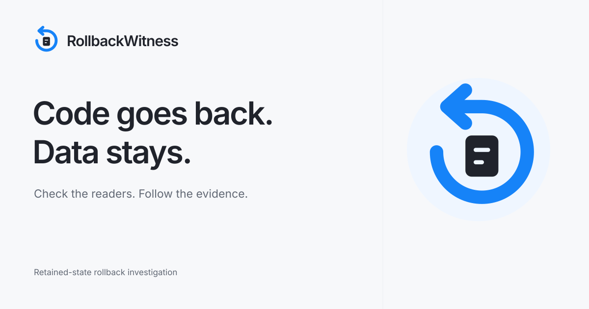

Retained record
The code returns.
The record remains.

RollbackWitness Visual identityA visual identity built around the thing a rollback leaves behind. The arrow returns; the record stays in place, ready to be checked.
Recommended: Retained record. It makes the rollback hazard visible in a single mark.
The code returns.
The record remains.
Look back.
Keep the evidence in sight.
A rollback connected
to its consequences.

Primary · light surfacesA simplified favicon. A clear 27px sidebar mark. A full wordmark for covers.
The same blue, cool surfaces, compact typography, and quiet geometry already in the product.
Check whether older code can still read saved data.
Describe what to undo and what must be kept.

Small, useful assets for investigation states. Status colors stay reserved for evidence.
Trace a reader to its retained data.
Download SVG
A concrete read failed.
Download SVG
A required part is unresolved.
Download SVG
Modeled readability checks passed.
Download SVGThese illustrations describe UI states; they do not establish a verdict. A bounded pass covers modeled byte/shape readability only.
A 1200 × 630 cover for the README, demo, and project card.

Colors sampled directly from the current workspace. Inter / Segoe UI, with no additional font download.
Download design tokens#1683f8#20232b#f7f8fa#eceef2